Columns show normalized τ = 0, 0.5, 1; actual time is scaled by T_end. Rows include every algorithm scheduled by the immutable run plan.
| Algorithm / run status | Start (τ=0) | Midpoint (τ=0.5) | End (τ=1) |
|---|---|---|---|
| branch-and-bound run: run_20261012T041941Z__branch-and-bound__minmax__berlin52-3939d9e3cc19-6ce5d7089a__r00__2ad5886378c4 COMPLETED; feasible=True; verified=True (CERTIFIED_CONTINUOUS); optimality=FEASIBLE | 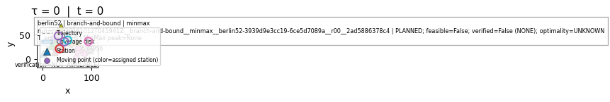 | 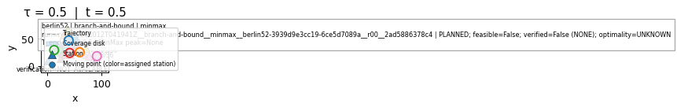 | 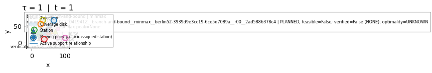 |
| brute-force run: run_20261012T042845Z__brute-force__minmax__berlin52-3939d9e3cc19-6ce5d7089a__r00__8a1a6808703c FAILED; feasible=False; verified=False (NONE); optimality=FAILED | FAILED; feasible=False; verified=False (NONE); optimality=FAILED NO_SOLUTION_ARTIFACT | FAILED; feasible=False; verified=False (NONE); optimality=FAILED NO_SOLUTION_ARTIFACT | FAILED; feasible=False; verified=False (NONE); optimality=FAILED NO_SOLUTION_ARTIFACT |
| genetic run: run_20261012T041941Z__genetic__minmax__berlin52-3939d9e3cc19-6ce5d7089a__r00__3a86ccab2d8f COMPLETED; feasible=True; verified=True (CERTIFIED_CONTINUOUS); optimality=FEASIBLE | 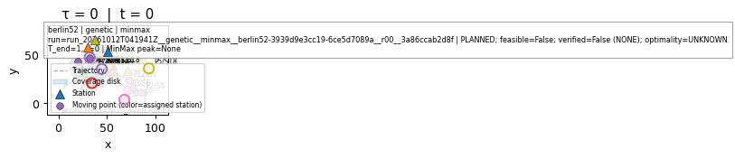 | 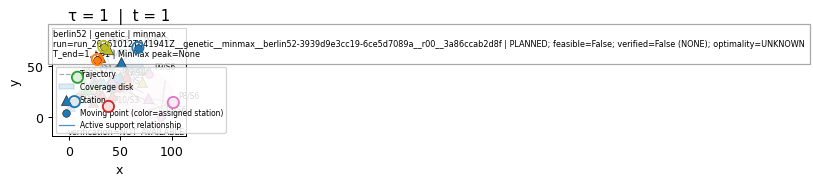 | |
| greedy run: run_20261012T042845Z__greedy__minmax__berlin52-3939d9e3cc19-6ce5d7089a__r00__ae7463098356 INVALID; feasible=False; verified=False (NONE); optimality=FAILED | INVALID; feasible=False; verified=False (NONE); optimality=FAILED NO_SOLUTION_ARTIFACT | INVALID; feasible=False; verified=False (NONE); optimality=FAILED NO_SOLUTION_ARTIFACT | INVALID; feasible=False; verified=False (NONE); optimality=FAILED NO_SOLUTION_ARTIFACT |
| ip-kont run: run_20261012T042845Z__ip-kont__minmax__berlin52-3939d9e3cc19-6ce5d7089a__r00__5d4aa837f6a5 SKIPPED; feasible=False; verified=False (NONE); optimality=UNKNOWN | SKIPPED; feasible=False; verified=False (NONE); optimality=UNKNOWN NO_SOLUTION_ARTIFACT | SKIPPED; feasible=False; verified=False (NONE); optimality=UNKNOWN NO_SOLUTION_ARTIFACT | SKIPPED; feasible=False; verified=False (NONE); optimality=UNKNOWN NO_SOLUTION_ARTIFACT |
| local-search run: run_20261012T041941Z__local-search__minmax__berlin52-3939d9e3cc19-6ce5d7089a__r00__6ae54b8d48ff COMPLETED; feasible=True; verified=True (CERTIFIED_CONTINUOUS); optimality=FEASIBLE | 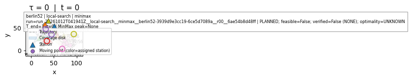 | 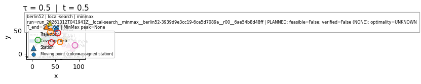 | 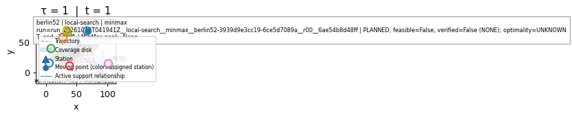 |
| lp-rounding run: run_20261012T041941Z__lp-rounding__minmax__berlin52-3939d9e3cc19-6ce5d7089a__r00__568ba0cfe167 COMPLETED; feasible=True; verified=True (CERTIFIED_CONTINUOUS); optimality=FEASIBLE | 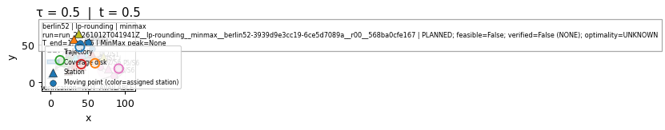 | 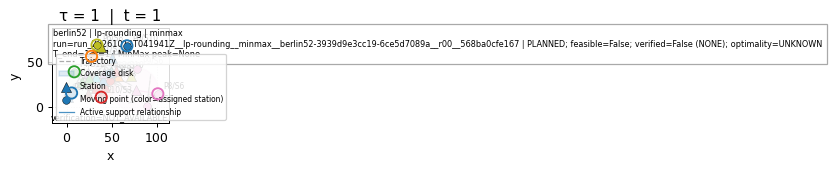 | |
| nn run: run_20261012T041941Z__nn__minmax__berlin52-3939d9e3cc19-6ce5d7089a__r00__61eefddee780 COMPLETED; feasible=True; verified=True (CERTIFIED_CONTINUOUS); optimality=FEASIBLE | 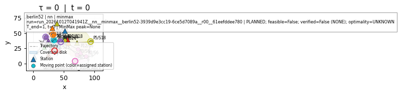 | 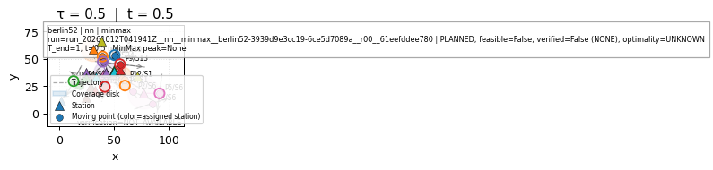 | |
| primal-dual run: run_20261012T041941Z__primal-dual__minmax__berlin52-3939d9e3cc19-6ce5d7089a__r00__4fecee7aaf89 COMPLETED; feasible=True; verified=True (CERTIFIED_CONTINUOUS); optimality=FEASIBLE | 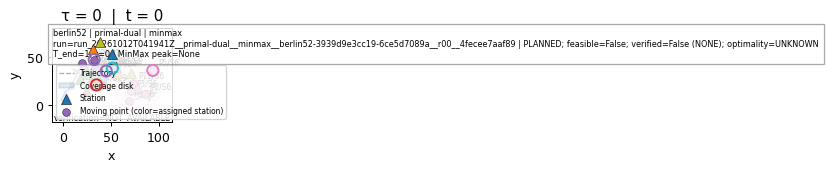 | 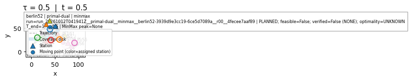 | 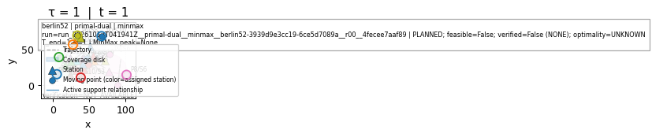 |
| sa run: run_20261012T041941Z__sa__minmax__berlin52-3939d9e3cc19-6ce5d7089a__r00__af3833cf1102 COMPLETED; feasible=True; verified=True (CERTIFIED_CONTINUOUS); optimality=FEASIBLE | 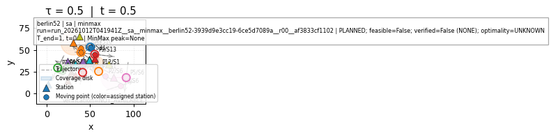 | 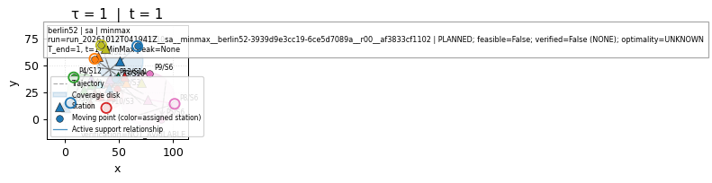 | |
| shifting run: run_20261012T041941Z__shifting__minmax__berlin52-3939d9e3cc19-6ce5d7089a__r00__95eb1ee958dc COMPLETED; feasible=True; verified=True (CERTIFIED_CONTINUOUS); optimality=FEASIBLE | 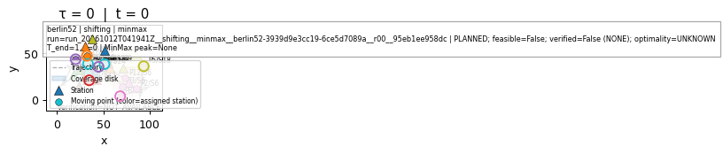 | 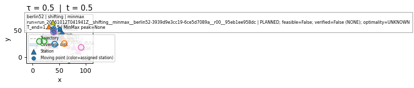 | 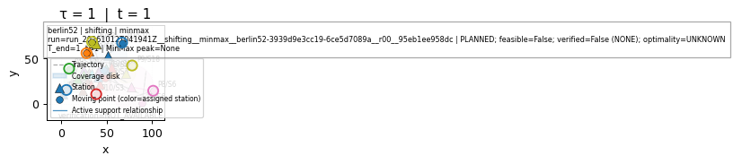 |